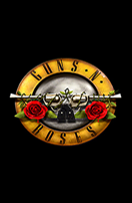

Bienvenido a la pagina principal
¿Que Es Guns N' Roses?
Guns N' Roses es una banda estadounidense de hard rock formada en Hollywood en la zona de Sunset Strip alrededor de Santa Monica, en la ciudad de Los Ángeles, California en 1985. El grupo fue fundado por el vocalista Axl Rose y el guitarrista Izzy Stradlin. Asimismo, la banda es uno de los números artísticos más exitosos de la historia musical, debido a sus grandes ventas, numerosos galardones, legado y repercusión mundial hasta la fecha. También Guns N' Roses es considerada una de las bandas más influyentes de la historia debido a su gran legado musical.
